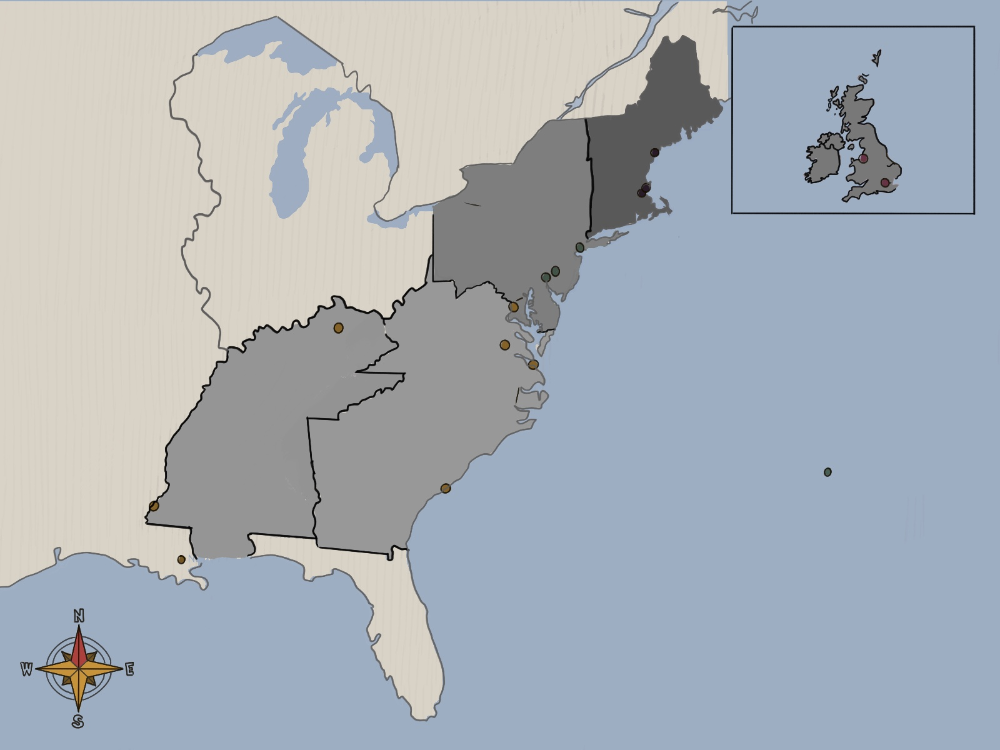
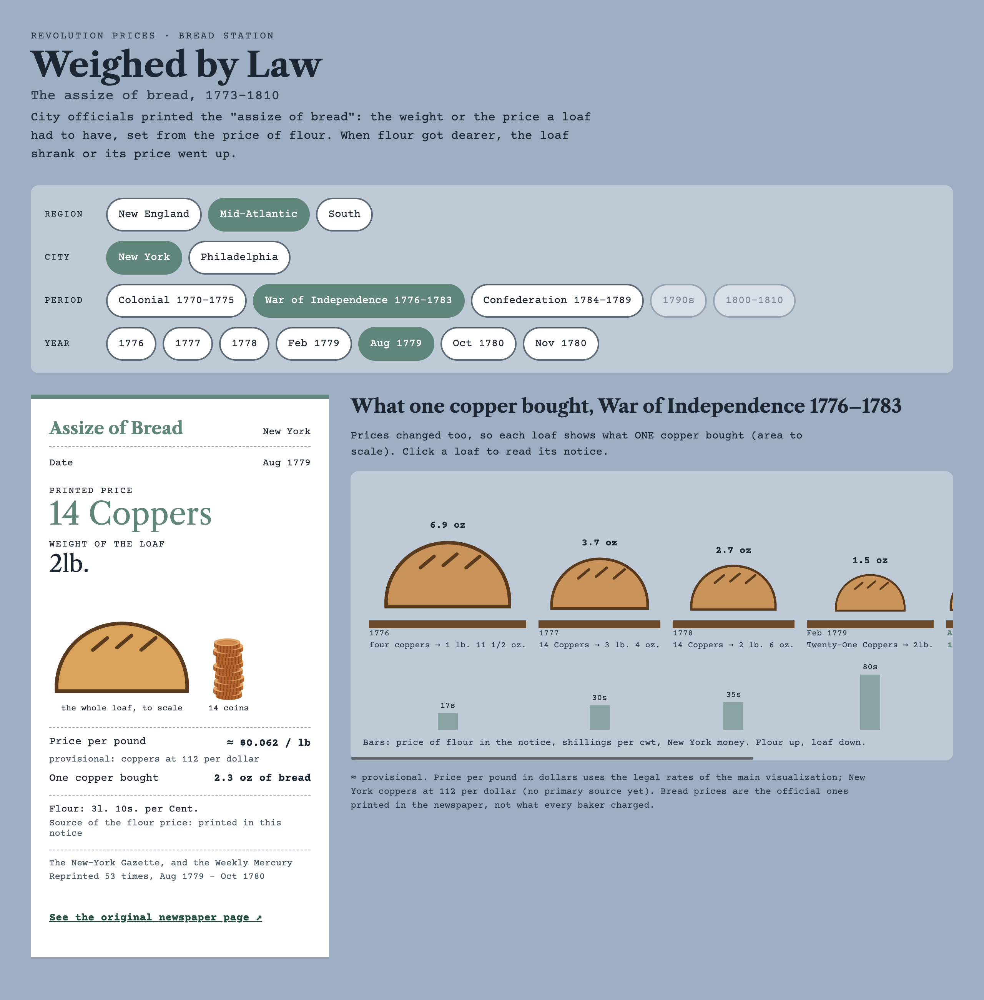

1790
Major Studio · Project 2 · work in progress
Bread, flour and sugar in American newspapers, 1770–1810
How did the cost of everyday goods change between the Revolution and the early Republic?
Every week, merchants' newspapers printed “price currents”: lists of what flour, sugar, coffee or rum sold for in port. Bakers' notices printed how much bread a coin would buy. This project reads those printed prices, about 3,100 of them after removing reprints, and follows them through five periods, from the colonial years to the Embargo of 1807–09.
1 · The assize of bread
In many towns the price of bread was not free: the authorities printed an “assize”, a table saying how much a loaf costing a fixed coin had to weigh, given the price of flour. When flour went up, the coin stayed the same and the loaf got smaller. We found 336 of these notices in 8 cities.
In Philadelphia, one penny bought 6½ oz of white bread in December 1773 and 8¾ oz in June 1776.
One assize as it was printed: the loaf drawn to scale next to the coins it cost, its weight, its price per pound in dollars, the flour price behind it, and a link to the original newspaper page.

A shelf of loaves, one per notice: what ONE coin bought, area to scale, with the flour price under each loaf. New York's loaf shrinks during the war; Philadelphia's grows in 1773–76.
Price per pound in dollars, by date, one color per city. Some notices are in coppers or wartime paper money that still have no sourced dollar rate; they will be shown apart.
2 · The receipts
Each receipt is the median price of the goods printed in one region's price currents, in one period, year or month. Choose a region on the small map or with the buttons, then a period. Click any product to see its price period by period.

Each period's receipt will start full, with every good that was printed in that region and period. You remove what you would not buy, and your basket is compared with the period before, using only the goods sold in both periods (the ones left out are listed).
Bread joins the basket from the assize notices: how big your loaf is compared with the period before. If you skip bread, the market suggests it. Where no bread notice survives, it says so.
Year and month views stay available for anyone who wants more detail.
3 · Revolutionary War pension files
Decades after the war, veterans and widows applied for pensions and told, in their own words, what the war had cost them. This section will set their words next to the prices above.
Quotes from pension declarations about hunger, scarcity and being paid in worthless money, each with its date, place and a link to the file.
“[Quote from a pension declaration]” — [name], [state], [year]
Some applicants had to list everything they owned, with a value. Their lists, item by item, next to what the same goods cost in the price currents.
A private's monthly pay in barrels of flour or pounds of sugar, period by period, using the receipts' medians.
About the data
Newspapers: Chronicling America (Library of Congress), 1770–1810, through the Revolution Crossroads datasets (Smithsonian). Pension files: National Archives (NARA), Revolutionary War pension and bounty-land warrant application files.
[Placeholder: full list of datasets, currency sources and methods.]